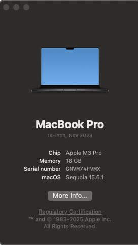
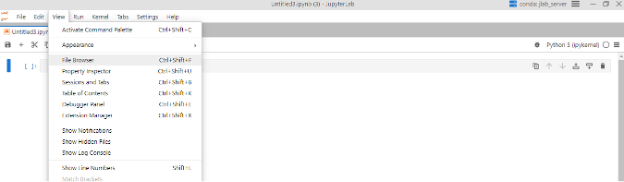

Installing JupyterLab Desktop
Last updated on 2025-10-07 | Edit this page
Estimated time: 30 minutes
Overview
Questions
- How do I install JupyterLab Desktop?
- How do I configure JupyterLab Desktop so I can find my files again?
Objectives
- Download JupyterLab Desktop.
- Install JuptyterLab Desktop.
- Learn about folders and files on your computer.
- Create a folder for the Jupyter notebooks you will create during this workshop series.
- Learn what a working directory is and set the working directory for your project.
- Set the default working directory for JupyterLab Desktop.
Getting Started with JupyterLab Desktop
JupyterLab Desktop is a desktop application with an integrated web user interface from Project Jupyter that enables one to work with documents and activities such as Jupyter notebooks, text editors, terminals, and even custom components in a flexible, integrated, and extensible manner. Jupyter notebooks are common in data science and visualization and serve as a convenient common-denominator experience for running Python code interactively where we can easily view and share the results of our Python code.
There are other ways of editing, managing, and running code, but Jupyter notebooks let us execute and view the results of our Python code immediately within the notebook.
Why Run Jupyter Notebooks in JupyterLab Desktop
We use JupyterLab Desktop because it’s convenient for our learners:
- It does not require knowledge of the command line to install.
- It is available on MacOS, Windows, and Linux devices.
- It does not require users to install Python separately.
Installing JupyterLab Desktop
How you install JupyterLab Desktop will depend on your operating system.
- If you have a Mac laptop, click here.
- If you have a Windows laptop, click here.
Installing JupyterLab Desktop: MacOS
Before installing JupyterLab Desktop on a Mac, you will need to know the type of processor your computer has.
Depending on when you bought your laptop, your mac may have an Apple Silicon chip or an Intel Chip. For JupyterLab Desktop to work correctly, you must install the version of the program that corresponds to the right chip.
Finding Your Processor Chip Type
- Click on the Apple icon in the top left corner of your screen.
- Select About this Mac.
- Look at the line labeled Chip.
- If your chip name begins with Apple, it is an Apple Silicon processor.
- If your chip name begins with Intel, it is an Intel processor.

Downloading Jupyter Lab
Go to the JupyterLab Installation page.

From the Mac (macOS 10.15+) column, select the download that corresponds to your chip type. Click to download the file to your computer.
Once the download has completed, double-click the .dmg file.

Drag the JupyterLab.app application to the Applications folder on the right. This will install the JupyterLab app to the Applications folder on your computer.
What Are .dmg Files?
- A *.dmg file is a disk image file, typically used to install software on MacOS.
- If you do not drag the JupyterLab app icon to your Applications folder, it will run from the .dmg file instead.
- By copying the JupyterLab app icon to the Applications folder, you tell your computer that you want the contents of the .dmg copied and installed to your Applications so that you can use the application later.
- You can delete (and eject) the .dmg file after you’ve installed JupyterLab.
When the installation has finished, close the installer window.
Installing JupyterLab Desktop: Windows
Downloading JupyterLab Desktop for Windows
Go to the JupyterLab Installation page.
From the Windows (10, 11) column, select the x64 Installer. Click to download the file to your computer.
Installing JupyterLab Desktop
Locate the downloaded file (it will often go to your Downloads folder by default) to start the installation process. Double-click it.
You will see a launcher like this open.

When the application has finished installing, click Finish to complete the installation and open JupyterLab Desktop.
Launching JupyterLab Desktop
Whether you have a Mac or a PC, you should now be looking at the JupyterLab Desktop welcome screen.
If you have not used Python before, you will see a message in the bottom left corner prompting you to install Python.
Click the text that says Install using the bundled environment. JupyterLab Desktop will install Python for you, which should take at most a minute or two.
Once the bundled environment is installed, click New Session to enter the JupyterLab application for the first time.
The JupyterLab Interface
JupyterLab has many features found in traditional integrated development environments (IDEs) but is focused on providing flexible building blocks for interactive, exploratory computing.
The JupyterLab Interface consists of the Menu Bar, a collapsable Left Side Bar, and the Main Work Area which contains tabs of documents and activities.
Menu Bar
The Menu Bar at the top of JupyterLab has the top-level menus that expose various actions available in JupyterLab along with their keyboard shortcuts (where applicable).
A screenshot of the default Menu Bar is provided below.

Main Work Area
The main work area in JupyterLab enables you to arrange documents (notebooks, text files, etc.) and other activities (terminals, code consoles, etc.) into panels of tabs that can be resized or subdivided. A screenshot of the default Main Work Area is provided below.
If you do not see the Launcher tab, click the blue plus sign under the “File” and “Edit” menus and it will appear.

Left Sidebar
The left sidebar contains a number of commonly used tabs. Most importantly for us, it has a file browser (showing the contents of the directory where the JupyterLab server was launched). The directory where the JupyterLab server was launched will function as your working directory. This matters because if you want to reference other data files in your code, JupyterLab will look for them here by default. A screenshot of the default Left Side Bar is provided below.

The left sidebar can be collapsed or expanded by selecting “Show Left Sidebar” in the View menu or by clicking on the active sidebar tab.
On Macs, the file browser displays automatically, but on Windows this file browser view is often hidden by default. We recommend that you turn it on using the following steps.
Step 1: Click on view in the menu bar. This opens a drop down menu of options. Select “File Browser”
Step 2: When you click on File Browser, this will open up the file directory as shown above.
What is a Working Directory?
- A working directory (or current working directory) is the current folder or location on a computer’s file system where a program or process is operating by default.
- The working directory is the default location where Python will look for files you want to load and where it will put any files you save.
- You will write your code in Jupyter Notebooks, and save them for
later in a folder. Jupyter Notebooks are file type that ends in
.ipynb. - It’s a good idea to save your code files in the same folder where
you save any data files that you want to analyze. In this workshop your
data files will be in the open source spreadsheet format
.csv.
Create your JupyterLab Working Directory
- When you save files in Jupyter Lab, they will be saved automatically
to your working directory (also known as a folder). You will also put
data files you will use in this course in the same folder, to make it
easier for you to tell the Python interpreter how to find the
files.
- The best way to avoid confusion about your working directory is to set it properly when you start your session. As explained on the JupyterLab Desktop ReadMe (https://github.com/jupyterlab/jupyterlab-desktop?tab=readme-ov-file\#sessions-and-projects), you can start a new session by opening JupyterLab Desktop (double clicking on the JupyterLab Desktop icon) and then using the links at the Start section of the Welcome Page.
- Close and re-open JupyterLab Desktop
- Choose
Open...(Open Folder...on Windows) and create a new directory (folder) that you will use to keep all of your workshop materials in. This directory (folder) should be specific to this workshop. Be sure to put it somewhere on your computer, such as your Documents folder or Desktop, where you will be able to find it again. If you have already created a folder for this workshop, you can select that instead of creating a new one.
Create and save a Jupyter Notebook file to your Working Directory
Now that JupyterLab is reopened, click on Python 3 in the Launcher to create a new Jupyter Notebook:

Use the menu or save icon to save this blank notebook. Make sure to
name it something helpful! For example, PythonWorkshop or
PythonDay1. Notice that JupyterLab will append
.ipynb to the end of the name of the notebook. This is the
file extension for Jupyter Notebooks.
In the future, you can open to this working directory by any of the following:
- Double click in finder to open this file.
- Open JupyterLab Desktop, and from the Start screen click on the relevant item in the Recent sessions list to restore this session.
Verify your Working Directory
You can verify that you have the correct working directory by using what’s called a magic command. Use the %pwd magic command within a code cell to print the current working directory. The output will display the current directory path.

This magic command passes the “print working directory” command to your computer. Learn more about pwd here (https://superbasics.beholder.uk/command-line/example-pwd/).
How to Change your Default Working Directory in Python
While we have showed you how to create a folder and set it as the working directory for an individual session in JupyterLab, you may also wish to change your default working directory to somewhere where you will often store code files. To do this, you need to access your settings menu.
Step 1: Find the 3 vertical bars in the top right of your screen next to the kernel and click on them (be aware: this is only available in JupyterLab Desktop, not Anaconda). This will bring up a drop-down menu with a list of options.
Step 2: Once that drop down menu is open, click on settings.
Step 3: Clicking on settings will open up a screen similar to the one below. Click on the server as is highlighted below. Here we can change our working directory. Click on Change.
Step 5: Search your file directory for a folder you will recognize. For now, consider setting the folder you have just created for this workshop as your working directory. Above you can tell I named my default working directory “PythonWorkshop”. Now all my scripts of python code from JupyterLab will be saved in that folder when I choose to save them.
- JupyterLab Desktop is an application for running files for managing and organizing Python code called Jupyter notebooks.
- You will only need to install JupyterLab Desktop once for this workshop.
- Your current working directory determines where programs are run and how filepaths are interpreted.